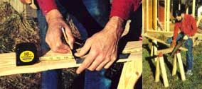
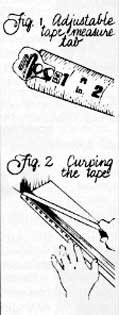
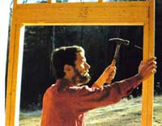
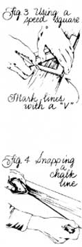
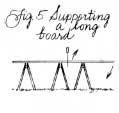
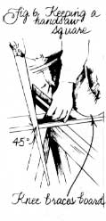
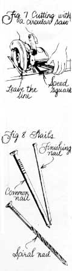
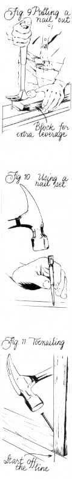
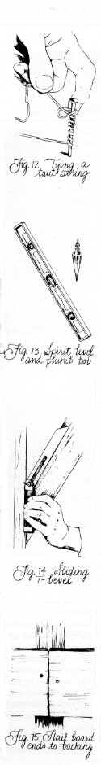

MOTHER'S HANDBOOK
Very beginner-level building skills.
Carpentry is really more of a mental game than a physical one: The pencil is more important than the saw.
A couple of summers ago, I took a leave from my desk job to work with the three-man carpentry crew that was building my family's new house. I didn't know much of anything about carpentry, but I wanted to learn and was eager to participate.
One day during the initial framing, I was talking with the utility company worker who was hooking up our temporary power line. "How many people you got working on your house?" he asked me. "Three," I said, referring to the paid crew and shyly omitting myself. "That's good," he said. "Three's the perfect number. If you have any more than that, one of them's usually a lunt who does more harm than good."
That was me, all right-I was pretty incompetent. But I learned. And, as a result, I may not be a professional carpenter, but I am past the initial mismeasure and misnail stage. So (with the help of two contractor friends, Bill McCurdy and Chris Crosson), I'd like to share some building lore for other people who don't know a speed square from a chalk line (and might feel a bit embarrassed about that lack of knowledge). Anybody already competent with such tools can stop reading now-you won't learn anything new here. This article contains those basic tips that real carpenters don't often deign to tell beginning ones.
It's just for us lunts.
The real secret to carpentry, one friend told me, is to not misplace your tools. That may sound so obvious it's stupid, but it's not half as stupid as you'll feel the first day you spend more time hunting tools than using them. So, right off the bat, buy yourself a tool belt. Stash your gear in those leather pouches, and you won't have to retrace all your steps every time you need the tape measure.
(By the way, you know what a carpenter's most important tool is? I was shocked to realize this: a pencil . Carpentry involves constant figuring and measuring. So if you ain't got a pencil, you cain't build.)
Let's talk about that tape measure. A locking, retractable tape-that's the thing you need, ¾ or 1" wide, so it's stiff enough for long, one-person measurements, and 16' to 25' long. Notice how the metal tab on the end of that thing's kinda loose? It's not busted (my first suspicion). Rather, that tab (Fig. 1) pushes in when you measure from the inside of a board and pulls out when you measure from the outside-so it self-corrects for its own width. Never give that looseness another thought; just measure away, you'll be OK. (Do use the same tape for the whole job, though, in case one tape's tab moves more than another's.)
"Level twice, build once." Constantly checking-and rechecking-is a key to good building.
Measure twice, cut once: Even professional carpenters try to follow that axiom to avoid sawing boards the wrong length. That makes repeating a measurement before you cut mandatory for us beginners (I've measured three times when I was nervous). Take care to read the tape accurately, noting the right number of inches and fractions thereof. When you read a tape upside down, don't mistake 26" for 29"-and don't accidentally think you're reading 7' 10" when you're really reading 6' 10". (These are really very easy mistakes to make, because we normally read left to right, but you have to read an upside-down tape right to left .)
How do you measure higher than you can reach? Let a lot of tape out so you can run it past the end point you're measuring. It'll curve back toward your hand, but as long as the tape's straight to the end point, your measurement will be straight, as well (Fig. 2). Use the same tape-bending trick when you're measuring against an inside wall and can't run the measure past your end point. (Or if the tape measure case is an exact width, like 2" or 3", you can just run it into the wall and add its width-don't forget to do this-to the tape length you see.)
OK, you've measured (twice). You're sure you need to cut a board 68¾ long. Now grab that board, hook your tape over one end, run it down 683/4", and mark the cutting point with a big V whose two legs diverge from the exact point. That V, or "crow's-foot," is a more accurate way to mark an exact spot than a penciled line. You might get thrown off by the width of a line or the fact that it may not be perpendicular to the board, but a V points to precisely the right spot. It also makes a big mark that is easy to spot (that's important).
Now you need to mark a right angle from that crow's-foot so the whole board will be 68¾ long. You can use a combination square or a big framing square for that, but for my money the best tool for the job is a speed square (a right triangle with protruding rims on one of its sides). You can lay its rimmed side against your board, line up the right-angled side with your V mark and-zip-run your pencil down that edge for a perfectly straight, square-to-the-board line (Fig. 3).
You know what? I just left something out. You should first use your right-angled tool to check the end of the board that you won't be cutting. I know, you bought your wood from the lumberyard, so it's supposed to have square ends. Check it anyway-sometimes it won't. Once you've made sure that end's square (cut it square if you have to), measure those 68¾ " and mark your cut.
And anytime you goof and mark a line in the wrong place, be sure to run a squiggly pencil line all the way through the bad line when you draw the correct one. Otherwise, you'll have two lines to choose from when you cut, and-inevitably-you'll sometimes pick the wrong one.
Now suppose you're ripping (cutting with the grain instead of across it) down the length of a long board, or cutting across a full-sized sheet of plywood. Sure, you can mark the V on both ends of the board, so you'll know where to start and end your cut, but your square won't reach all the way across, so how can you mark a straight cutting line between those points? Well, it's time to pull another handy aid out of your well-supplied tool belt: the chalk line . This is a string that's covered with colored marking chalk. Pull the end out of its case, hook its tab over the near V on your board, run out some string (keeping it off the board), line it up on the far V and pull it taut. Then lift the string ( straight up) in the middle (keep it taut now) and let go (Fig. 4). It'll snap down against the board. Lift the string off, winding as you go, and the chalk it shed when snapped will leave a nice straight line that marks the entire length of your cut.
A few chalk line pointers: Get a blue one; red chalk lines are rainproof and practically indelible. Don't use it on wet wood-damp chalk will gum up the inside of the case. If you can't hang the string's tab over a board end, drive a nail partway in at the starting point and hook the tab over that. If you have to mark a long line, have another person snap the middle of the string while you hold the taut end. Need an exceptionally long mark? Have that assistant pin the string down in the middle and then snap the line on both sides.
One more thing to consider before you cut: You'll need to support your board on sawhorses or a table. Don't brace both ends and cut in the middle; the board will sag in and trap your saw blade. Instead, support the long side of the board, as close to the cutting line as possible, then saw off the short side.
You'll have to vary that arrangement if both pieces are going to be long. Otherwise, the free-falling piece will be so heavy it'll break off before you finish cutting and leave a splintery stub. In that case, ask a friend to hold the free end. If no one's around, put a third sawhorse under the falling piece, not at its far end (remember the pinching problem), but near the middle of the falling piece, just a little toward the cut (Fig. 5).
When cutting a big piece of plywood, you can set two boards on two sawhorses, lay your plywood on top of them so the cutting line runs between the sawhorses, and then cut as little into the support boards as possible.
Handsaw or circular saw? Handsaws are less popular-they're slower and more tiring to use-but they will get the job done. If you use one, concentrate on keeping it Straight, and don't let its body twist sideways into the wood. Hold it at a 45° angle, start the notch with a few pulling strokes, then push and pull with an even, steady motion that lets the saw do most of the work. You can steady the board with your opposite knee and reach over to grab the waste end with your free hand right before it breaks off to keep the wood from tearing.
Getting tired? The saw may well be dull. Have it sharpened, and you'll be amazed how much stronger you suddenly become. Also, be sure you're using a crosscut saw (the ordinary one with lots of little teeth) for cutting across boards and a ripsaw (fewer and larger teeth) for cutting with the grain.
Having trouble following the line? Examine your mistake. If you're cutting a straight line but it bears left or right, the fault is yours. Practice holding the saw straight to the line while you cut. If the top of the cut is on the line but the bottom is beveled (slanted) in or out, you're not holding the saw blade vertically square to the board. Hold a square up against the blade as a guide while you cut (Fig. 6) until you develop an eye for sawing correctly. If your cuts all have curves, your saw blade is bent. Get another saw.
Circular saws (Skilsaw is a popular trade model) are definitely the most common cutting tool-but watch out, they're dangerous! Never let that spinning blade get near your hands, legs or any other part of your body. Never let it cut its own power cord. Never get the blade pinched in a cut-it can kick back into you. Never put a blade on with its teeth going the wrong way (the saw will jump out of the cut). Don't jam its blade guard open to "make things easier." Always cut with the saw on the supported side of the board, not on the one that will fall off. Unplug it when you want to adjust the blade or leave the worksite. In other words, treat that tool with lots of respect.
But don't let me scare you off: A circular saw is immensely useful. It can cut at angles. With special blades, it can saw through a variety of materials (even concrete). And it can make those standard straight cuts with ease.
For straight cuts, first make sure the blade is set just 1/8" deeper than your board (it works more efficiently and tears the wood less). Then hold the saw so the power cord and your body are out of the way, start the motor and let it reach full speed before the blade enters the wood. Unfortunately, the guide sights at the front of a circular saw often don't work well as guides (don't ask me why), so you have to look around the side and watch the blade itself moving along your cutting line. That means you'll need to wear safety goggles to keep flying sawdust out of your eyes. (Earplugs are good, too, for muffling the noise.)
The first inch of a cut is all-important. Get that straight and the saw'll pretty much steer itself. If it's off your line, though, pull the saw out and start again. If necessary, hold the blade guard handle back with one hand, and evenly push the saw all the way through the wood with the other, letting it rest flush on the supported board (Fig. 7). Don't push it too hard-forcing the tool increases the risk of accident and can damage the motor. Don't try to back a circular saw out of a cut while it's running-it may kick back instead. Turn the motor off as soon as the cut is finished, but don't put the saw down until the safety guard has snapped back into place and completely covered the blade.
Leave the line . This carpenter's axiom means you want to cut just along the waste side of your penciled line, so you can still see the line on the wood piece you use. Why? Because the width of a saw cut (the kerf) can be substantial (1/8" or more), so if you cut on the line, you'll remove wood from your measured side, as well. (For the same reason, don't mark a series of cuts all at once on a board: The kerf waste will throw them off. Mark one, cut one. Then mark the next, cut the next.) So don't forget: Cut so the line stays on the piece you want, not on the waste piece.
Are you having trouble making the saw run straight across the cut? Then once you've got it lined up to start your cut, set a speed (or other) square flush against the saw's other side, and hold it there while you cut. That'll help keep your saw on course and give you a beautiful finished cut. A speed square's 45°-angled side makes an especially useful guide when you need to make 45° cuts.
Finally, the soul (and sometimes frustration) of carpentry: driving nails. Real carpenters can wham a nail home in two or three hits, but that skill comes with practice, lots of practice. (I still can't do it.) These tricks will help, though.
First, pick a hammer that feels comfortable: properly balanced and neither too heavy to use repeatedly nor too light to have much impact (try one about 16 or 20 ounces). That'll make a big difference.
Next, get the right size nail. The rule of thumb here is that the nail should go twice as far into the second board as it traveled through the first-i.e., its length should be three times the thickness of the first board. You'll want a common flatheaded nail for ordinary jobs, a spiral (spiral-shanked) nail when you need extra holding power and a finishing (no-headed) nail for inside jobs where you don't want the head to show (Fig. 8). If your work's going to be exposed to weather, use galvanized nails. They resist rust.
Hold your nail in place, either with your thumb and forefinger or-if you want to protect your fingertips- between your palm-up fingers, like a cigarette. If you're nailing a really tiny nail or you're in an awkward position, you might use needle-nose pliers, cardboard, putty or chewing gum to hold the nail in place.
Tap the nail to secure it, remove your hand, hit it a bit harder once or twice (not full force, or you may send it zinging off into space) and then pound it in. At first, you may tend to use your wrist too much when driving nails because that gives you finer control (fewer misses). Try instead to get your entire arm into the act with a loose, swinging motion. You'll hit with more power and tire less quickly. Also, resist choking up on the hammer to increase your accuracy. Make yourself learn from the get-go how to do it right.
Is the nail going in crooked? Well, if it's a third or more in, it's too late to reorient it. Pull it out and try again. Happen again? You may be trying to nail through a knot or curved grain. If so, you'll have to predrill your hole (drill it slightly smaller and shorter than the nail) to get any nail to go in straight.
Is the nail-curses!-bending over? That'll happen a lot if the wood's too hard to nail easily. In that case, make sure you're not using too puny a nail for the job at hand, or try rubbing soap or wax on the nails to help them slide in. Or simply eliminate the hassle by predrilling your nail holes. Of course, the problem may be that you're hammering the nailhead at an angle instead of straight on. Only practice will solve that problem.
In the meantime, you may be able to tap that bent nail in by carefully banging straight on its head (if you're lucky), or you could try to straighten it out with sideways blows. If neither trick works, you've got to pull the nail out. Grab the culprit with the claws on the back end of your hammer, put the tool's head down on the board (you can lay a putty knife or thin wood strip under the hammerhead to keep it from marring the board) and pull. If you do put a small block of wood under your hammerhead, you'll have extra leverage and pulling power- that's a big help once the nail's partway out (Fig. 9).
What's that? The nail just won't come out? This time bend the hammer down sideways instead of pulling it back. This'll bring out almost any nail, but it'll be too bent to reuse.
Suppose you drove the nail in just fine, but then you realized that the boards were placed wrong, so now you need to take it out. The hammer claws won't squeeze under the nailhead, so try banging the top board from the back and then the front to see if that makes the nailhead protrude enough to grip. No luck? Use a flat-faced pry bar (a wonderful tool that's often appropriately called a wonder bar), and either wedge it under the nailhead or use it to pry the two boards apart so you can pound the nail point.
Does the wood split when you drive a nail? If so, don't position the nails too close to the end of a board. Try to keep them at least as far away from the edge as the board is thick. Also, make sure all your nails aren't going in the same stretch of wood grain. Stagger them. Still splitting? Blunt the tip of the nail with a few hammer hits before you drive it. It'll then tear, not pry, its way through the fibers and be less likely to split the wood. Still splitting? Sorry. Guess it's time to predrill your holes again.
When you're nailing one board onto the edge or end of another ( edge or end nailing ), the union will be stronger if you drive your nails in at slight alternating angles rather than all straight down. The same holds true for face nailing , nailing two boards back to back. If the face-nailed boards are both the same width, you can't use the 3X rule of thumb to determine nail length. Instead, pick nails that would protrude slightly if nailed straight down, then drive them in at angles.
Actually, if appearance isn't a factor, you can use longer nails for face nailing and clinch them for a joint that just plain won't come apart. Drive the nail all the way through. Bend the nail tip over with your hammer claws. Then hammer the nail over and flat. The bent tip will stick back into the wood.
If you're doing finishing work, you don't want to have nailheads or round hammerhead marks (carpenters call them donkey tracks) in the wood, so use finishing nails with no heads. Then when the nail gets close to the wood, grab a nail set . (It looks somewhat like an iron pencil. The "lead" fits into a dimple in the little finishing nail's top and you hammer on the "eraser" end.) Drive the nailhead a bit into the wood with the nail set (Fig. 10), and fill the resulting hole with wood putty.
My least favorite kind of hammering is toenailing , angle nailing through one board into another. The classic toenail goes out the end of one board and into a second, right-angled one (Fig. 11). It's hard to do. You can split the board end off, drive too low or too high or push the board out of position.
To avoid these mishaps, start your nail at a spot on the board halfway up the nail's length. Drive it almost square to the wood until you get it started, then turn it to a 45° angle and pound it on down. If the board end splits, blunt the nail tip, start higher up on the board and/or predrill the hole. To keep your hammering from pushing the top board off line, start that board off the line in the other direction to compensate ahead of time for its tendency to slide. Or start a toenail on the opposite side of the board, and alternate driving the two nails to keep the board in place. Or simply hold the board in place with your foot, a wood block or clamps.
Actually, the fact that a toenailed board tends to move comes in handy when you do need to move a board over to a chalked line or nail a bowed board to a straight one. Just start a toenail in the direction you want the board to go and pound away!
One last nail tip: Never leave a nail in a loose piece of wood, most especially if its point is sticking out. Otherwise, sooner or later, without fail, somebody will injure either a tool or a foot on it. (One of my contractor buddies stepped on five such nails in one day, but luckily his extra-thick soles prevented real injury.)
Another surprisingly useful carpentry tool is string . It seems like anytime you want to establish a line to build to, you have to run out a taut length of string. Nylon is best; it's strong. To draw and tie it tight, use this trick: Drive a nail where the string needs to end, loop it around the nail eight or more times, then make another loop, draw the string through it, lay that round the nail and tighten (Fig. 12). It's remarkably easy to do and undo that knot.
Why are nails sized in "pennies"? In England, they used to be sold by the hundred. One hundred 2" nails cost six pennies, so they became known as sixpenny (6d) nails!
Penny Length No.per Lb.
2d 1 847
4d 1½ 296
6d 2 167
8d 2½ 01
10d 3 66
12d 3¼ 56
16d 3½ 47
20d 4 30
String lines often help when you want to level something-and you're leveling all the time in building. A spirit leveland aplumb bobare pretty straightforward tools (Fig. 13). The former has a bubble in a vial to help you check that things are level horizontally (often called simply level), and often another vial to check that something's level vertically (or plumb). A plumb bob, a weight on a string, is good for leveling vertically or checking that one object is centered over another. Be sure to use these tools precisely (don't let the bubble in a spirit level be just "slightly off center"). Use a level in more than one direction (for instance, make sure that post is plumb front to back as well as left to right). Make sure you're holding a level against a straight, smooth surface (a good reason to use it in more than one spot). And recheck something for level or plumb after you finish nailing or securing it.
Shims are little wedges of wood you use as spacers when, for one reason or another, things don't quite meet as they should. You just push the shim in the gap as far as necessary (to fill the gap completely, drive one shim in from one side and another from the other) and then nail. They're the carpenter's way of cheating-and they're so useful that lumberyards call them "cedar shakes" and sell them by the bundle.
There are a few other tools that even the beginning carpenter will probably need. You've just got to have a drill; electric is best. Screwdrivers come in handy all the time. You need several so you'll have the right size for the screw you're driving. (Remember that if wood is quite hard, you can predrill the screw holes.) Three or four nail sets will take care of your finish nailing needs. A staple gun, pliers (particularly locking pliers) and a utility knife (it holds razor edges for cutting) are ordinary tools with lots of uses.
A set of three or four wood chisels will help you in a multitude of ways. A sliding T-bevel (Fig. 14) is like a small square, but it has one free-moving, adjustable side. You can use it to "capture" any nonsquare angle and "transfer" it to a board you're cutting. (Always double-check the transferred angle before you cut.) Some kind of plane will help you smooth surfaces and shave off that inconvenient extra width. (The easiest type to use, in my opinion, is Surform. It has replaceable cheese-grater-type blades.) And safety goggles can save your eyes from flying chips of wood or metal. The ones with real eyeglass frames are much better than the clear, all-plastic type that scratch and fog up easily.
Always make a complete drawing of everything you plan to build. And be sure to include the width of the material in your calculations. If you're making a simple square box, for instance, with the two side walls inside the two end ones, those side walls will have to be cut two widths shorter than the end ones to keep the box square.
Speaking of widths, you probably already know that a 2 X 4 isn't really 2" by 4", just as a 1 X 6 isn't really 1" by 6". Boards get planed a bit from this nominal size in their final milling. So a 2 X 4 is actually 1½ by 3½", and a 1 X 6 is ¾" by 5½”.
Put the information in the last two paragraphs together and you can figure out why the most common 2X4 board, the stud , used to frame all those 8'-tall walls, is actually 3" shy of being 8' long. Have you got it? The stud in a framed wall, like the inside walls of a box, sits on a 2 X 4 and is topped by a 2 X 4. The real width of those two boards (1½ plus 1½") adds up to 3", so the stud has to be 3" short for a wall exactly 8' tall.
Never leave the end of a board dangling between supports in anything you build. Always nail it to something. (Add some backing, called blocking , if need be.) If another board's going to butt up against the first one, you'll want to cut the first board so it ends halfway across that nailing surface (Fig. 15). Then you'll have something left to nail the other board to.
Want to be sure a large corner makes a true right angle? Measure 3' out one side and 4' out the other. If the distance between those points (the hypotenuese of a right triangle) is 5', you're on the mark.
Do you want to know if any rectangular structure you've laid out-from a box to a house site-is square? Measure the diagonals. If they're equal (and, indeed, all four corners are right angles and the opposite sides are equal), you're in business.
Obviously, I can't tell you everything about carpentry in one article-even if I knew it! In fact, I haven't actually told you how to build anything ; I've just tried to help you start using the tools. You'll have to figure out your own projects. Better yet, get a carpenter friend to make some drawings for you of that first bookcase or woodshed. Getting that kind of design help while you sit together over a cup of hot tea can be indispensable.
But once your builder friend's finished those sketches and you're out there alone with tape, hammer and a stack of boards waiting like a disassembled jigsaw puzzle, then some of my advice may well come in handy and help you avoid some of the goofs I made while I was learning these simple lessons.
|
 |
|
 |
|
 |
 |
 |
|
 |
 |
 |
|
 |
|
|